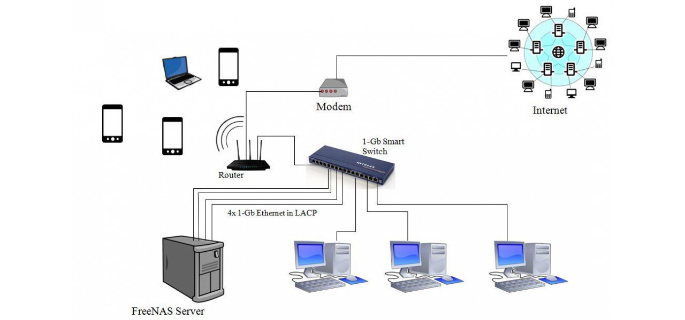

Internetul este o rețea globală de calculatoare ce facilitează schimbul rapid de informații, permitându-le utilizatorilor să acceseze informații din întreaga lume. Folosind protocoale standardizate, internetul permite comunicarea între calculatoare, servere și diverse dispozitive. Începând cu ARPANET în anii '60 și până în prezent, rețeaua globală s-a extins pentru a include sute de milioane de utilizatori.
E-mailul este unul dintre cele mai utilizate servicii pe internet, oferind utilizatorilor posibilitatea de a trimite mesaje rapide și fișiere la nivel global.
Forumurile sunt platforme online unde utilizatorii pot discuta despre diverse subiecte, împărtăși informații și cere ajutor într-o comunitate virtuală.
Platformele de chat permit comunicarea instantanee între utilizatori, având aplicații variate de la mesagerie privată la conversații de grup.
Rețelele sociale au revoluționat comunicarea, facilitând interacțiuni între oameni din întreaga lume. Exemple populare includ Facebook, Instagram și Twitter.
Începuturile internetului, folosit doar de cercetători și instituții guvernamentale. A fost lansată rețeaua ARPANET, care stă la baza internetului modern.
Aplicațiile web și browserele au permis accesul publicului larg la internet. Primele platforme de comerț online au apărut, iar utilizarea rețelelor sociale a început.
Internetul a devenit un instrument indispensabil în viața cotidiană, cu un impact semnificativ asupra educației, afacerilor și comunicării.
Internetul a avut un impact profund asupra multor aspecte ale vieții moderne. În educație, a deschis accesul la cursuri online și resurse educaționale, permițând învățarea la distanță. În afaceri, a revoluționat comerțul, permițând dezvoltarea comerțului electronic. De asemenea, în viața personală, internetul a facilitat comunicarea instantanee prin e-mail, mesagerie și apeluri video.
Accesul la internet variază semnificativ în funcție de locație. În zonele urbane, internetul de mare viteză este disponibil aproape peste tot, însă în multe zone rurale există încă provocări legate de accesul rapid și de calitate. Internetul de mare viteză, 4G și 5G sunt disponibile în multe orașe, în timp ce zonele izolate pot depinde de conexiuni mai lente, cum ar fi DSL.
